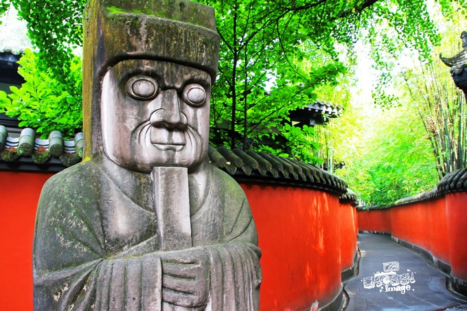
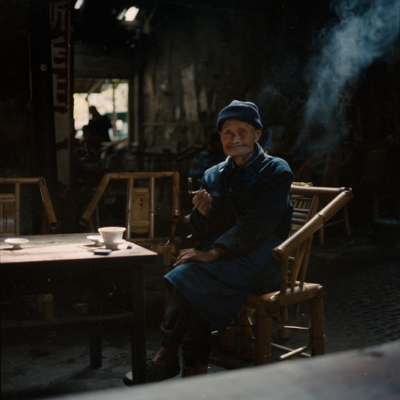
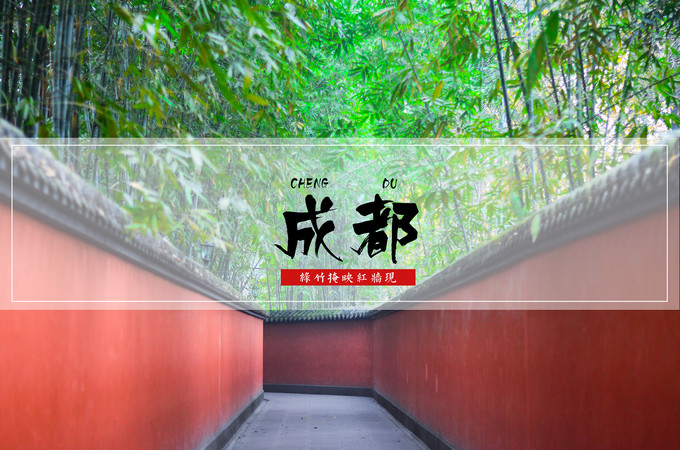
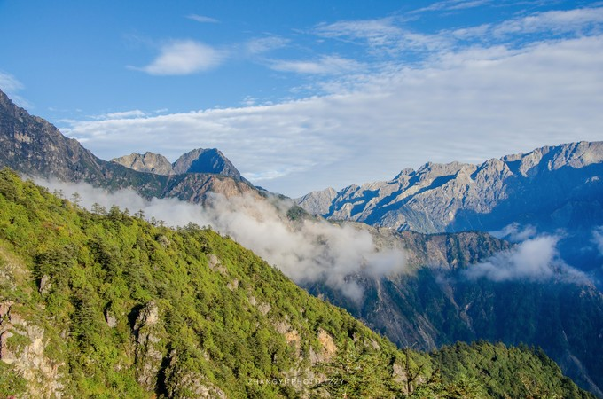
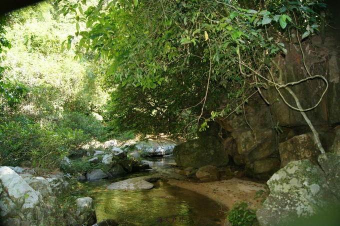
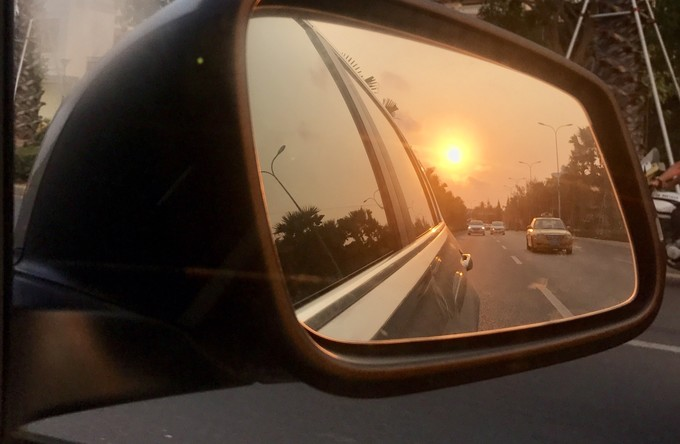

设为首页
/收藏本站
时间：2017/4/26
/天气:多云转晴
首页
景观
美食
游记
风俗
全部
街边摊狂热分子的成都逛吃72小时

没有锦里和春熙路的美食街，没有什么龙抄手，赖汤圆，让这些国营老店自己傲娇去吧！72小时，16家成都本地人推崇的餐馆，26种成都地道小吃，这就是最专业的成都探店攻略。各景点附近苍蝇馆子推荐名单详见个文中各景点，以美食为主要目的的旅行者绝不可错过.
彭镇老茶馆：浮生半日

十一月的成都一如我记忆中那般灰蒙蒙一片。我们挑了个周末前去彭镇，竟十分幸运的遇上了晴天。彭镇老茶馆早已声名在外，我们遇上了一波又一波组团来参观的摄影爱好者们。大家拿着各式各样大小各异的数码相机对着茶馆以及喝茶的老人一阵狂拍，快门声不断，第一次目睹“中国式摄影团”的我抱着胶片相机，看得目瞪口呆。
吃一嘴红油 看漫天美景

每一次旅行就是一次学习的过程，虽然这次很匆忙，但还是习惯性地在忙碌间隙看各种有关目的地及周边的资料和游记。资料看得越多，对旅程就越是期待，下班后我们直接搭乘晚上的航班，终于踏上这片据说空气中都弥漫着火锅味的城市。
一场夜色，一场星空

去九峰山看一场独一无二的四川夜色，当夜幕降临的时候，眼前的画面震惊了我。成都，绵竹，什邡，德阳，彭州一闪一闪出现在黑夜中，在夜色中闪闪发光，原来四川的夜色这么美！...
海南琼中最美溪谷-仙女溪

海南拥有广袤山岳、热带原始雨林，森林覆盖率达62%，81座海拔1000米以上的山峰，从中部向全岛延展，绵延起伏、气势雄伟。11个国家森林公园面积达170多万亩，山林之间，5大热带雨林丰富的物种在温暖湿润的气候下自我生长、更新繁育，深深吸引了每一个来到这片雨林探访这片神奇秘境的游客...
不止大海，海南环岛自驾行

海南的山林資源和海洋資源一樣豐富，甚至更甚。如果只去了海灣，而沒有去登山，那是遺憾；就像仅去了亞龍灣，卻沒有去棋子灣，沒有去南灣猴島。這是一個值得去許多次的地方，三亞及周邊的酒店太多，要多去幾次才能住完，景點也是；海口、儋州、文昌的曆史太幽微，需要多去幾次才能聽聞；五指山、霸王嶺、七仙嶺、尖峰嶺、東山嶺，都值得去遠眺，去聽憑四麵八方的海風包裹。當然，最值得一再體味的，可能是海南熱烈灼人的陽光，暴露在那樣的陽光裏，感覺心情都明媚起來了！